关注公众号【算法码上来】，每日算法干货马上就来！

引言
编码器已经成为了很多 NLP 模型中的基本结构。不管你是做机器翻译，还是做句法分析，不管你是需要得到单词的上下文表示，还是需要得到句子的表示，你都需要一个强有力的编码器。输入一个句子，编码器最终输出每个单词的表示或者整个句子的表示。
而近些年来 NLP 领域用的比较多的编码器有 CNN ，RvNN ，RNN （尤其是 LSTM）和 Transformer 等等，今天我们主要关注最后两个。在编码器中加入结构信息有很多种用途。一是利用结构信息增强编码器的结构表示，进而提高下游任务的性能。二可以无监督学习出句子的句法树（如果融入的是句法结构信息的话）。
下面就给大家简要分享几篇融入了结构信息的编码器的论文。
01
Neural Language Modeling by Jointly Learning Syntax and Lexicon
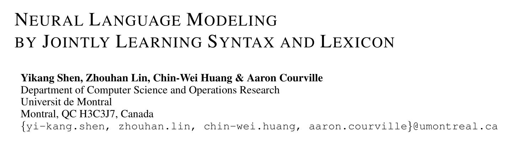
代码地址：
https://github.com/yikangshen/PRPN
论文解读：
https://godweiyang.com/2019/03/31/iclr18-prpn/
本文提出了一种新的语言模型叫做 PRPN ，隐式地建模句法树信息。具体实现上，模型分为了三个部分：Parsing 模块、Reading 模块和 Predict 模块。其中 Parsing 模块用 CNN 来预测相邻两个单词的句法距离（概念详见 Straight to the Tree: Constituency Parsing with Neural Syntactic Distance），通过句法距离就可以还原出句子的句法树了。Reading 模块用来建模上下文，同时还融入了前面时刻预测出来的句法距离信息。Predict 模块用来预测下一个单词是什么，做语言模型。
02
Unsupervised Latent Tree Induction with Deep Inside-Outside Recursive Autoencoders
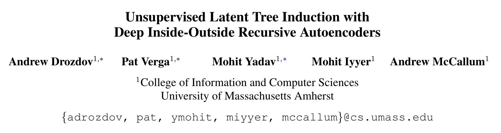
代码地址：
https://github.com/iesl/diora
论文解读：
https://godweiyang.com/2019/07/25/diora/
这篇论文提出了 DIORA 模型，主要使用 inside-outside 算法来计算每个 span 的表示和得分。其中 inside 过程其实就是自底向上计算所有 span 的得分和表示，而 outside 过程自顶向下计算 span 表示。最后目标函数也和其他模型有所不同，一般目标函数不是语言模型就是下游任务，但是这里用 outside 过程得到的所有单词的表示和得分来计算损失函数，也就是最大化每个单词的所有可能的句法树的得分总和。
03
Unsupervised Recurrent Neural Network Grammars
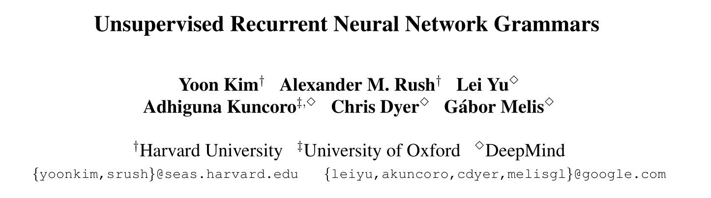
代码地址：
https://github.com/harvardnlp/urnng
论文解读：
https://godweiyang.com/2019/04/20/naacl19-urnng/
本文提出了 URNNG 模型，用变分方法和 RNNG 来做无监督句法分析。具体实现上是用两个网络，第一个是 inference 网络，来推理出句子对应的隐变量（也就是句法树）的条件概率。然后再用生成网络 RNNG 来建模句子和隐变量的联合概率。最后对这个联合概率求和得到句子的概率，也就是用语言模型来作为目标任务。
04
Ordered Neurons: Integrating Tree Structures into Recurrent Neural Networks
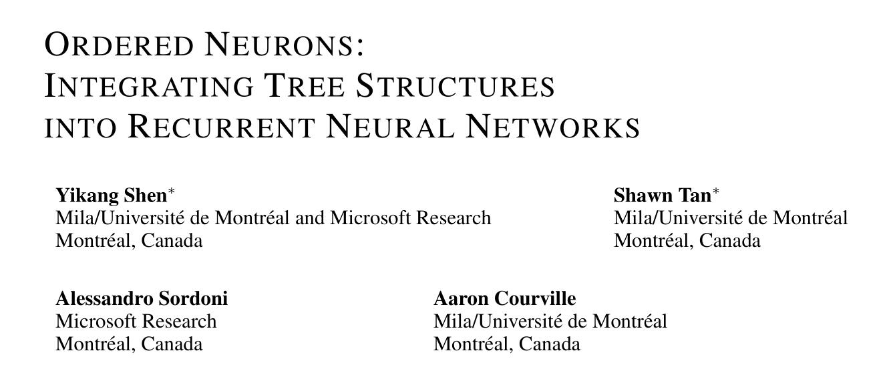
代码地址：
https://github.com/yikangshen/Ordered-Neurons
论文解读：
https://kexue.fm/archives/6621
这篇论文是 ICLR2019 的最佳论文之一，主要思想是赋予 LSTM 的神经元层级信息，对神经元排序（有序神经元），同时引入两个新的门控单元（主遗忘门和主输入门），来建模句子的层级结构信息。模型基于的最主要的指导思想就是：层级越高，颗粒度越粗，那么它在句子中的跨度就越大。输入一个单词之后，判断单词的层级和历史层级之间的大小关系，然后看情况更新参数的不同维度，低层保留历史信息，高层直接用输入信息覆盖，中间部分就用普通的 LSTM 更新。
05
PaLM: A Hybrid Parser and Language Model
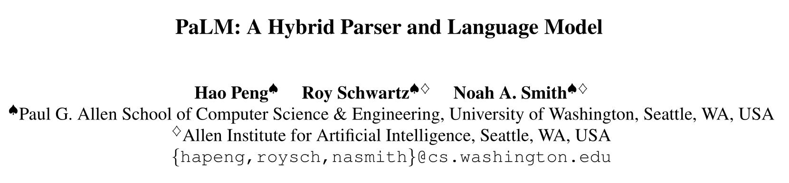
代码地址：
https://github.com/Noahs-ARK/PaLM
论文解读：
https://godweiyang.com/2020/01/09/emnlp19-palm/
本文在 LSTM 中融入 attention ，对于每个单词，都计算它和左边所有单词的 attention ，然后利用这个 attention 来融合历史信息，增强当前时刻的上下文表示。在解码句法树的时候，自顶向下解码，对于某个 span ，只需要贪心地找出使右儿子 span 得分最大的那个 split 就行了。至于这个 attention ，有没有句法树监督都是可以的，实际上没有句法树监督的话对语言模型效果更好。
06
Tree Transformer: Integrating Tree Structures into Self-Attention
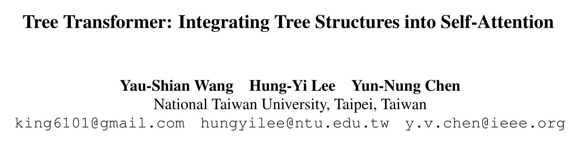
代码地址：
https://github.com/yaushian/Tree-Transformer
论文解读：
https://godweiyang.com/2020/01/06/emnlp19-tree-transformer/
本文和 Transformer 主要区别就是在每一层的 attention 之外还添加了一个成分 attention ，用来表示两个单词属于同一个短语之内的概率。最后总的 attention 就是原来的 attention 和成分 attention 做元素乘，这样的话同一个短语之间的 attention 就比较大，而不同短语之间的 attention 就很小。最后要想解码句法树的话，就还是用句法距离的算法，自顶向下解码句法树。
07
Multi-Granularity Self-Attention for Neural Machine Translation
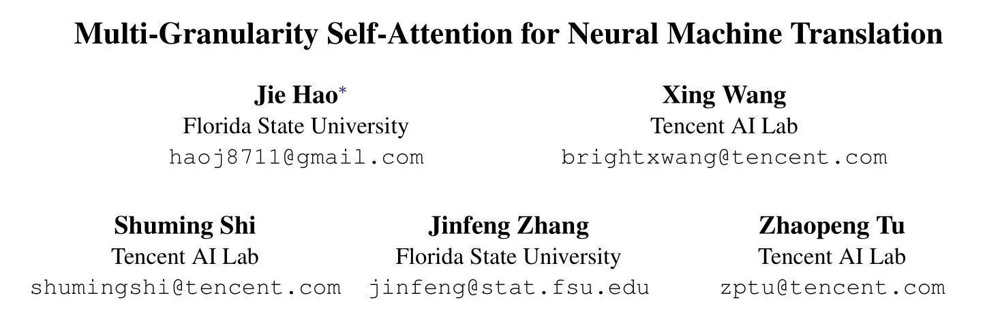
本文提出了多粒度的 Self-Attention 网络，也就是把原始的 Transformer 中的不同的 head 变成了不同的粒度。将一个句子分成了多个不重叠的短语，然后用 CNN 之类网络得到每个短语的表示，然后把单词当作 query ，短语当作 key ，做 self-attention 得到每个单词的粗粒度上下文表示。不同的短语切分方式对应着不同的粒度，可以用 n-gram 方式切分短语，也可以用句法树的不同层来切分短语。最后把不同粒度的单词表示拼在一起就行了。
08
You Only Need Attention to Traverse Trees
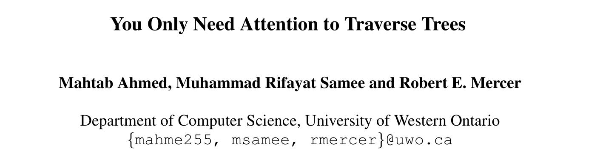
这篇论文思想也不复杂，论文目的是要设计一个能够编码句法树的网络，最终得到句子的向量表示，来给下游任务用。对于成分句法树，某个结点的表示可以由它的所有子结点做 self-attention ，然后经过一系列变换得到。对于依存句法树，某个单词的表示可以由它的父亲单词和所有儿子单词做 self-attention ，然后经过一系列变换得到。其实网络结构整体上看和递归神经网络是很像的，只是结点的结合函数借用了 Transformer 中的 self-attention ，模型名字作者也称为了 Tree-Transformer 。
09
Tree-Transformer: A Transformer-Based Method for Correction of Tree-Structured Data
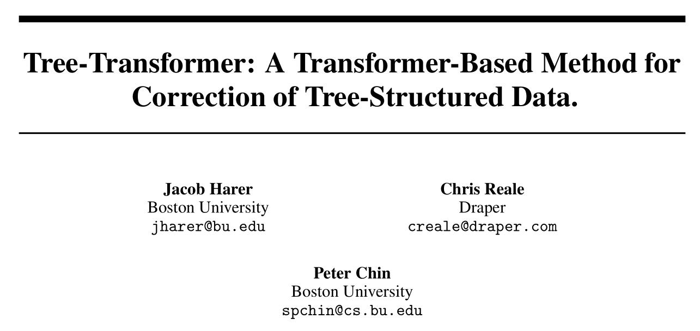
这篇文章并没有发出来，只是挂在了 arxiv 上，所以写的也是有很多错误的。主要提出了一个 Tree to Tree 的模型（类比 seq to seq 模型），按照 top-down 的顺序对一个句法树（或者代码的语法树等等）进行编码，然后 decoder 再按照 top-down 的顺序生成出一棵句法树。和普通的 Transformer 区别就是把中间的 feed-forward network 替换成了他这里的 tree conv block ，用来结合一个结点、它的父亲结点和所有兄弟结点的表示，如果没有的话就用零向量替代。
10
Tree-Structured Attention with Hierarchical Accumulation
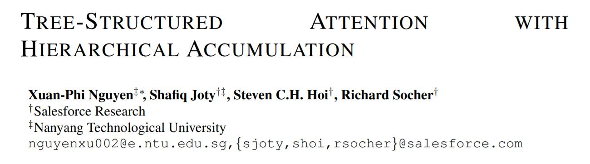
代码地址：
https://github.com/nxphi47/tree_transformer
这篇论文 reviewer #1 也说了，写的公式符号有点晦涩难懂，不是很清楚。结构复杂，如果不公开源码很难实现。反正我也是看得云里雾里的，一头雾水。大致思想就是用一个矩阵，列数正好就是句子长度，每一行就对应了句法树的一个结点，外加一行叶子结点。矩阵中某一行，如果对应结点子树包含了某个单词，那一列就是有结点的特征向量的，否则就是零向量。然后对矩阵先按行做累和，再按列做加权求和，最后得到每个结点的向量表示。然后就是怎么把它融入到 Transformer 中了，写的是真的晦涩难懂，有兴趣的去看原论文吧。
11
StructBERT: Incorporating Language Structures into Pre-training for Deep Language Understanding
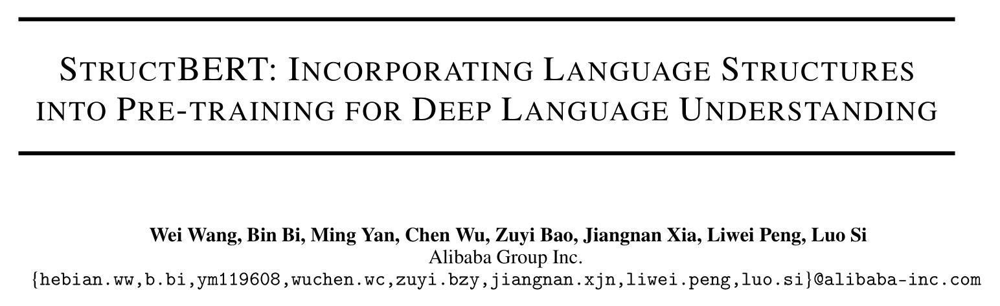
论文解读：
https://zhuanlan.zhihu.com/p/103207343
这是阿里巴巴司罗老师团队改进的一种 BERT 模型，叫做 StructBERT 。主要就是在原本的 BERT 基础上新增加了两个预训练任务。一个是单词级别的，最大化长度为 K 的一段子句的正确词序的概率。一个是句子级别的，分为预测下一个句子、上一个句子和不同文档的随机句子三种。